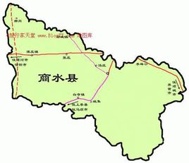

宋建隆元年（960年），改殷水县为商水县。
1947年8月18日，商水县城第一次解放；10月23日，商水县城第二次解放；11月成立商水县民主政府，12月又在其今日辖地西部成立了郾商西县民主政府。
中华人民共和国成立后，县名商水。1949 年～1953年，商水县属河南省淮阳专员公署，1953 年～1965年属河南省许昌专员公署，1965年后属河南省周口专员公署，1979 年周口专员公署改为周口地区行政公署，商水县属之。
1988 年4月，省政府豫政〔1988〕65号文件批复：同意商水县撤销谭庄乡、巴村乡、白寺乡、魏集乡、黄寨乡、邓城乡、固墙乡、练集乡，设立谭庄镇、巴村镇、白寺镇、魏集镇、黄寨镇、邓城镇、固墙镇、练集镇。实行镇管村体制，原辖行政区域不变。
1996年 5月，经省政府批准，撤销胡吉乡，设立胡吉镇。实行镇管村体制，原辖行政区域不变。
2000年6月，周口地区撤销，设立周口市（地级市），商水属周口市管辖。 宋建隆元年（960年），改殷水县为商水县。
截止2018年，商水县辖3街道、11镇、9乡、1农场：新城街道办事处、东城街道办事处、老城街道办事处、黄寨镇、练集镇、魏集镇、固墙镇、白寺镇、巴村镇、谭庄镇、邓城镇、胡吉镇、郝岗镇、姚集镇、城关乡、平店乡、袁老乡、化河乡、舒庄乡、大武乡、张明乡、张庄乡、汤庄乡、商水县农场 [3] 。县人民政府驻新城办事处 [4] 。
百度一下